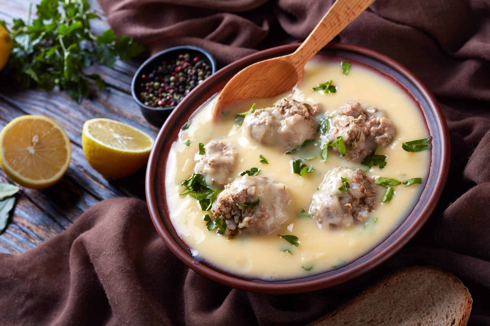

<!DOCTYPE html>
<html lang="en">
<head>
    <meta charset="UTF-8">
    <title>Document</title>
</head>
<body>
    
</body>
</html>

<h1> yuvarlakia</h1>



<p> </p>

<h2>Ingredients</h2>
<ul>
    <li>1 onion </li>
    <li>1 grarlic (clove)</li>
    <li>500g ground beef</li>
    <li>150g round grain rice</li>
    <li>1/4 bunch dill</li>
    <li>1 tablespoon mint</li>
    <li>15g salt</li>
    <li>pepper</li>
    <li>2-3 tablespoons olive oil</li>
    <li> lemon peels of 1 lemon</li>
    <li>1 1/2 liter water</li>
    <li> 2 bay leaves</li>
    <li>1 table spoon of veggie stock</li>    
</ul>
<p></p>
<h2>Execution method</h2>
<ol>
     <li>In a blender add the onion, the garlic, and 2 tablespoons water. Beat very well.</li>
     <li>Put the mixture in a tea towel and squeeze well so that the whole water is removed.</li>
     <li>Transfer to a bowl and add the ground beef, the rice, the dill and the mint finely chopped, salt, pepper, olive oil, and mix very well.</li>
     <li>Shape 18-20 meatballs and add them into a pot.</li>
     <li>Add the water, the lemon peels, the bay leaves, the vegetable stock, and cover with the lid. Simmer over low heat for 30-40 minutes.</li>
</ol>